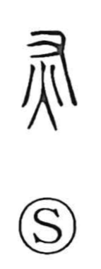

灰

Uncategorized
Kun: hai | On: kai
ash ・ ashes ・ gray
Explanation
This character is a compound ideograph that joins the fire element 火 with 又, the hand. It pictures a hand held over a fire to rake away what remains, clearing out and disposing of the cooled residue—ash. From this scene it came to signify the ashes left after a fire has died. The term 死灰, “dead ash,” names ash from which all warmth has vanished, and by extension serves as a figure for something utterly devoid of vitality.